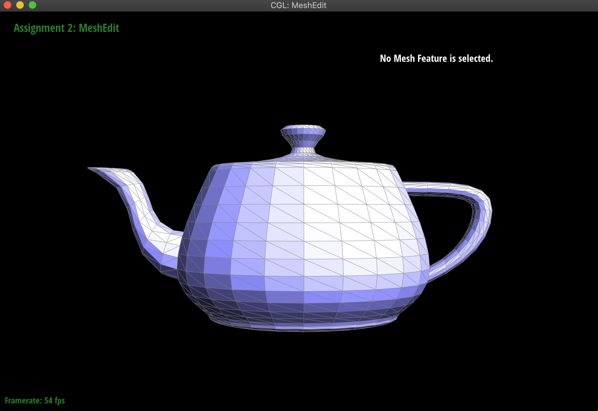
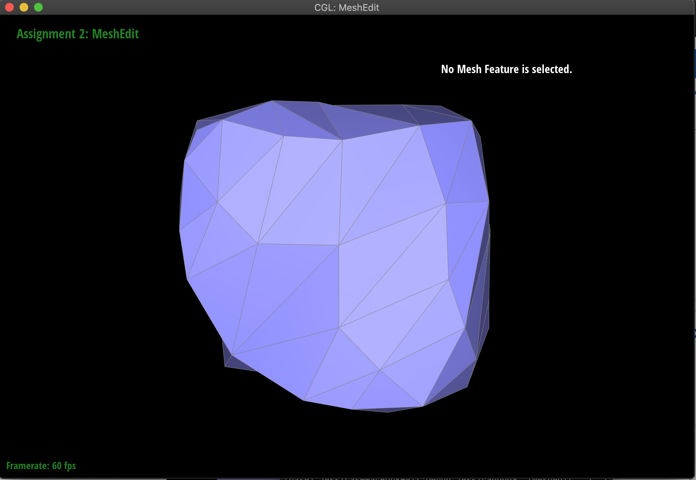

Overview
Within this project, we went through the basics of modeling. The fundamental building blocks of modeling are built through basic linear equations since essentially modeling is transforming and manipulating points to different dimensional spaces. Within part 1 we explore this in Casteljau's algorithm by finding the curves of rather stagnant and blocky points, letting us interpret potential transformations. Within part 2 we apply this idea even further by using Casteljau's algorithm with Beziers surfaces to allow us to manipulate and interpret points in the 3rd dimension. In part 3 we used our understanding of weighted area normals from Phongs shading to smooth over our models. In later sections, we dove into particulars of triangle mesh geometry & transformations allowing us to have more manipulative control over our models. In part 4, part 5, we implemented flipping and splitting edges for future remeshing. In part 6 we utilized past parts of flipping and splitting to allow us to make our meshes have better resolution and display properties.
Task 1
For Part 1, we utilized Casteljau algorithm which in essence, linearly interpolates with recursive subdivision. On
our passed in vector, t applies linear interpolation to all immediate neighbor pairs. Once the lerp is calculated for
these pairs we will return the new vector<\Vector2D> which will be the size of the previous vector minus one. We will
recurse and once again on the new vector and apply our previous methodology with the new points. This recursive
algorithm is continued until it hits the base case of the vector<\Vector2D> size is 1, indicating our control
point has been found.
Task 2
We can use the de Casteljau algorithm along both axes of the Bezier surface to evaluate the surface point. We apply
the de Casteljau algorithm on different parts of the surface and with the resulting points, apply it to the algorithm
to get one final point.
In this case, we continuously take slices of the Bezier surface in the u-axis direction and apply it to the de
Casteljau algorithm. After going through the slices/Bezier curves, we get a series of points roughly in line along
the v-axis called the “moving” bezier curve. From there, we apply the de Casteljau algorithm one more time and get
the final surface point (u,v).
Task 3
- to compute an area-weighted normal at a given vertex, you should use half-edge data structure to iterate thru
faces incident to vertex
- for each face, weight its normal by its area and then normalize the sum of all area-weighted normals
- Vertex object: encapsulates a single mesh vertex and has following member variables:
- Vector3D position: 3D coordinate of this vertex
- HalfedgeIter &halfedge: reference to half-edge rooted at this vertex
- HalfedgeIter halfedge: same as half-edge above but this variable is constant
- Vertex::normal() -> the area-weighted vertex normal
- access to class member variables such as Vector3D position
- To implement the area-weighted vertex normals we traversed the faces via the half edges of the teapot. As we
traversed, we added the face’s normal area which was computed by getting the cross products of its vertices. If
we reached a boundary we skipped over it since it would lead off of the edge We continued this until we returned
to the original halfedge we started with. Finally, we normalized the Vector3D sum by dividing by the Euclidean
length to compute the area-weighted vertex normals.
Task 4
We just tried to make sure that we were reassigning all the pointers to make sure we didn’t miss any element
pointers.
Half-Edge Flip Reassignment
| Half edge name |
Prev next() |
next() |
Prev face() |
face() |
Prev vertex() |
vertex() |
| h3 |
h4 |
h5 |
f0 |
f1 |
v1 |
v3 |
| h4 |
h5 |
h0 |
f0 |
f0 |
v0 |
v0 |
| h5 |
h3 |
h1 |
f0 |
f1 |
v2 |
v2 |
| h0 |
h1 |
h2 |
f1 |
f0 |
v0 |
v2 |
| h1 |
h2 |
h3 |
f1 |
f1 |
v1 |
v1 |
| h2 |
h0 |
h4 |
f1 |
f0 |
v3 |
v3 |
Face Reassignment
| Face name |
Prev halfedge() |
halfedge() |
| f0 |
Face of h0 or h1 or h4 |
h0 |
| f1 |
Face of h1 or h3 of h5 |
h3 |
Vertex Half-Edge Reassignment
| Vertex |
Prev halfedge() |
halfedge() |
| v0 |
h0 or h4 or h7 |
h4 |
| v1 |
h1 of h3 or h9 |
h1 |
| v2 |
h5 or h8 |
h0 |
| v3 |
h2 or h8 |
h3 |
Task 5
Half-Edge Split Reassignment
| Half edge name |
Prev next() |
next() |
Prev face() |
face() |
Prev vertex() |
vertex()) |
| h3 |
h4 |
h4 |
f1 |
f1 |
v1 |
m |
| h4 |
h5 |
h11 |
f1 |
f1 |
v0 |
v2 |
| h11 |
- |
h3 |
- |
f1 |
- |
v2 |
| h5 |
h3 |
h12 |
f1 |
f3 |
v2 |
v2 |
| h12 |
- |
h13 |
- |
f3 |
- |
v1 |
| h13 |
- |
h5 |
- |
f3 |
- |
m |
| h0 |
h1 |
h10 |
f0 |
f0 |
v0 |
v0 |
| h10 |
- |
h2 |
- |
f0 |
- |
m |
| h2 |
h0 |
h0 |
f0 |
f0 |
v3 |
v3 |
| h1 |
h2 |
h15 |
f0 |
f2 |
v1 |
v1 |
| h15 |
- |
h14 |
- |
f2 |
- |
v3 |
| h14 |
- |
h1 |
- |
f2 |
- |
m |
Similar to task 4, we drew a diagram of the triangle before the edge split and labeled all the mesh elements. We
then had another diagram representing the triangle after the edge split and we relabelled all the corresponding mesh
elements and added new hash elements also (3 new edges, 6 new half edges, 1 new vertex, 2 new faces). Finally we
reassigned pointers and created new pointes to reflect the triangle diagram after edge split.

:)
Task 6
To implement loop subdivision we first calculated the new weighted positions of all the vertices. For old vertices
we calculated the new position using: 3/8 * (A + B) + 1/8 * (C + D) where A, B, C, and D are the 4 nearest vertices
of the newly created vertex, and we stored the new position in the newPosition variable of vertex. For new vertices
we used: (1 - n * u) * original_position + u * original_neighbor_position_sum where n is the degree of the old vertex,
u is ⅜ if n is 3 and 3/(8n) otherwise, and we stored the new position in the newPosition variable of the edge that the
new vertex will be on. We then marked all the current vertices and edges as old to differentiate from the newly
created mesh elements in the later steps. We then iterated through all of the original edges in the mesh and split
them if they weren’t boundary edges. We marked the newly created edges and vertex as new, and updated
the new vertex\’s newPosition to be the calculated new position stored on the edge this vertex was created on.
We then flipped the newly created edges that are connected to both a new and old vertex. Finally, we iterated
through all the vertices of the mesh (including the newly created ones), updated its position to be the weighted
average of the points around it (from the value stored in newPosition), and changed all the newly created mesh
elements to be old as to not mess further loop subdivision steps. To debug, we tried rendering without updating
the vertex positions to make sure that the loop subdivision was working properly. We also rendered only updating
old vertices’ positions and only updating new vertices’ positions, which helped us figure out that we had an error
in how we were updating the newly created vertices.
After loop subdivision, some of the flatter faces rise up more while the sharp corners get smoothed out. Since we
are updating vertices to be a weighted average of its neighboring positions, each vertex gets pulled closer together.
For the cube mesh, it means the corners will get pulled inwards and become more smooth. For the torus mesh, the sharp
edges and corners are also smoothed out as the vertices get pulled closer to the inside.
flat to sharper
back down to a little smoother)
sharp corner that gets smoothed out
torus mesh
Presplitting the boundary edges of the cube seems to reduce the effect of smoothing over the corners.

If we split an edge on every face of the cube, it subdivides symmetrically. By splitting more edges, it adds more
sharp edges and corners to the cube that way when we loop subdivide, when the sharp edges are pulled in, it’s pulled
in more evenly throughout the cube, making the subdivisions more symmetric than before.
next two are same loop subdivision but different angles